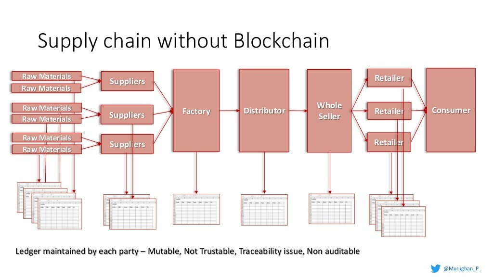
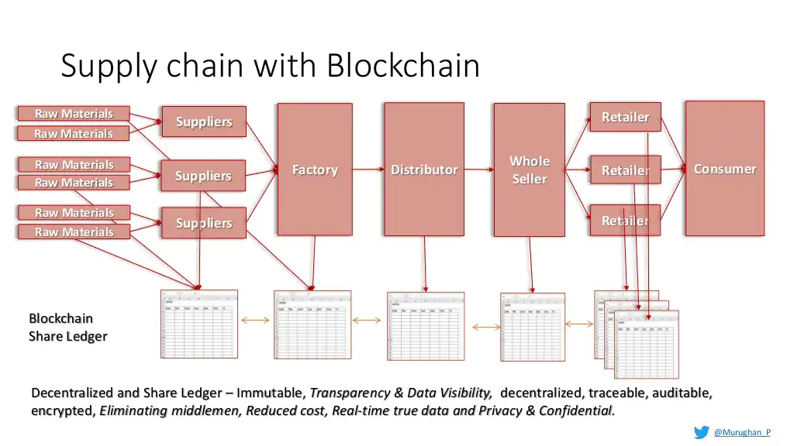
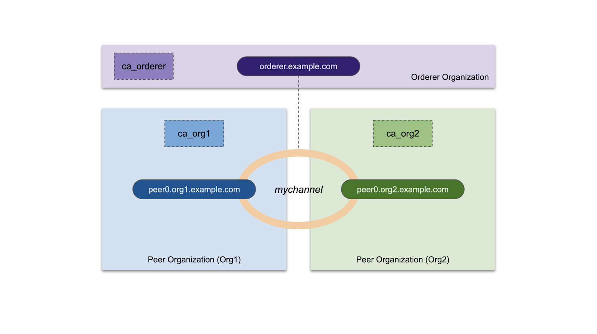

<!doctype html>
<html lang="en">
  <head>
    <meta charset="utf-8">

    <title>Fundamentals of Backend and Blockchain Development</title>

    <meta name="author" content="Dhruvin Parikh">

    <meta name="apple-mobile-web-app-capable" content="yes" />
    <meta name="apple-mobile-web-app-status-bar-style" content="black-translucent" />

    <meta name="viewport" content="width=device-width, initial-scale=1.0, maximum-scale=1.0, user-scalable=no, minimal-ui">

    <link rel="stylesheet" href="../../reveal.js/css/reveal.css">
    <link rel="stylesheet" href="../../reveal.js/css/theme/black.css" id="theme">

    <!-- Code syntax highlighting -->
    <link rel="stylesheet" href="../../reveal.js/lib/css/zenburn.css">

    <!-- Printing and PDF exports -->
    <script>
      var link = document.createElement( 'link' );
      link.rel = 'stylesheet';
      link.type = 'text/css';
      link.href = window.location.search.match( /print-pdf/gi ) ? '../../reveal.js/css/print/pdf.css' : '../../reveal.js/css/print/paper.css';
      document.getElementsByTagName( 'head' )[0].appendChild( link );
    </script>

    <!--[if lt IE 9]>
    <script src="../reveal.js/lib/js/html5shiv.js"></script>
    <![endif]-->

    <style>
      .reveal .slides h1, .reveal .slides h2, .reveal .slides h3 {
        text-transform: none;
      }

      .two-column {
        display: flex;
        flex-wrap: wrap;
      }

      .two-column em {
        margin: 20px;
      }

      .reveal .big-and-bold {
        font-weight: bold;
        font-size: 135%;
      }

      .reveal .shrunk-a-bit {
        font-size: 90%;
      }

      .reveal .shrunk-a-bit pre {
        width: 100%;
      }

      .reveal pre {
        width: 100%;
      }

      .reveal .highlight {
        color: yellow;
        font-weight: bold;
      }

      .reveal .highlightRed {
        color: red;
        font-weight: bold;
      }
    </style>
  </head>

  <body>
    <div class="reveal">
      <div class="slides">

<!------------------------------------------------------->


<section data-markdown><script type="text/template">

## CSBC 1000 - Fundamentals of Backend and Blockchain Development

### Class 10: Architecture Analysis : Hyperledger fabric

*Dhruvin Parikh*

</script></section>


<section data-markdown><script type="text/template">

## Class Plan
* Introduction to Hyperledger fabric
* HLF architecture
* Key design features
* Use cases
</script></section>

<section data-markdown><script type="text/template">

## Blockchain

* an immutable transaction ledger, 
* Distributed network of peer nodes. 
* Redundant data 
* Data is of validated transactions by a consensus protocol
* Data is grouped into blocks that 
* Block is bind to previous block via blockhash
</script></section>

<section data-markdown><script type="text/template">

## Public permissionless blockchains

* Public networks
* Open to anyone, 
* Participants interact anonymously
  * Bitcoin
    * UTXO model
  * Ethereum
    * Account model
    * Smart contract
</script></section>

<section data-markdown><script type="text/template">

## Limitation of public permissionless technologies

* Identity of participant
  * KYC and AML regulations
* Low transaction throughput
* High transaction confirmation latency
* Privacy and confidentiality of transactions
</script></section>

<section data-markdown><script type="text/template">

## Enter Hyperledger Fabric

* Open source 
* Enterprise-grade 
* Permissioned DLT platform
* Established under linux foundation
</script></section>

<section data-markdown><script type="text/template">

## Salient features of HLF

* Modular and configurable architecture
* Versatility and optimization for use cases
* Permissioned
</script></section>

<section data-markdown><script type="text/template">

## Modular components

* Ordering service
* Member service provider
* Peer-to-peer gossip service
* Smart contracts ("chaincode")
* Configurable DBMSs
* Enforcement and policy enforcement
</script></section>

<section data-markdown><script type="text/template">

  ## Ethereum vs HLF
  
  * HLF is a framework - Ethereum is platform
  * HLF has pluggable consensus
  * HLF does not have native currency
  * HLF Smart contract written in Golang, Java, Node.js
  * HLF transactions can be made private, confidential and identifiable
  </script></section>

<section data-markdown><script type="text/template">

## Transaction flow

* Address resiliency, flexibility, scalability, performance and confidentiality through following steps :
  * Execute
  * Order
  * Validate
</script></section>

<section data-markdown><script type="text/template">

## HLF model

* Assets
* Chaincode
* Ledger features
* Privacy
* Security and Membership services
* Consensus
</script></section>

<section data-markdown><script type="text/template">

## Fabric ledger features

* Query and update
* Read-only queries
* Transactions - keys/value, signatures
* Transaction validation
* Configurable block defining policy
</script></section>


<section data-markdown><script type="text/template">

## Security Model

* Identities
* Membership service providers
* Policies
* Peers
* Ordering service nodes
* TLS
* Peer and ordering service node operations service
* Hardware security Modules
</script></section>
  
<section data-markdown><script type="text/template">

## Hyperledger Projects

* Sawtooth
* IROHA
* Fabric
* BURROW
* INDY
</script></section>

<section data-markdown><script type="text/template">

## Hyperledger Tools

* CALIPER
* CELLO
* COMPOSER
* EXPLORER
* QUILT
* URSA
</script></section>

<section data-markdown><script type="text/template">

## HLF use cases

* Banking
* Finance
* Insurance
* Healthcare
* Human resources
* Supply chain 
</script></section>

<section data-markdown><script type="text/template">

## Supply chain w/o Blockchain


</script></section>

<section data-markdown><script type="text/template">

## Supply chain w/ Blockchain


</script></section>

<section data-markdown><script type="text/template">

## Fabric network deployment



</script></section>

<section data-markdown><script type="text/template">

## Assessment

* Module 11 : Architecture Analysis - Hyperledger Fabric Quiz 
    
</script></section>


<section data-markdown><script type="text/template">

## End of Class

</script></section>


<!------------------------------------------------------->


      </div>

    </div>

    <script src="../../reveal.js/lib/js/head.min.js"></script>
    <script src="../../reveal.js/js/reveal.js"></script>
    <script src="../../reveal.js/plugin/zoom-js/zoom.js"></script>

    <script>

      // Full list of configuration options available at:
      // https://github.com/hakimel/reveal.js#configuration
      Reveal.initialize({
        controls: true,
        progress: true,
        history: true,
        center: true,

        transition: 'none', // none/fade/slide/convex/concave/zoom

	math: {
          mathjax: '../lib/MathJax/MathJax.js',
          config: 'TeX-AMS_SVG-full',
	},

        // Optional reveal.js plugins
        dependencies: [
          { src: '../../reveal.js/plugin/markdown/marked.js', condition: function() { return !!document.querySelector( '[data-markdown]' ); } },
          { src: '../../reveal.js/plugin/markdown/markdown.js', condition: function() { return !!document.querySelector( '[data-markdown]' ); } },
          { src: '../../reveal.js/plugin/highlight/highlight.js', async: true, callback: function() { hljs.initHighlightingOnLoad(); } },
          { src: '../../reveal.js/plugin/math/math.js', async: true }
        ]
      });

    </script>

  </body>
</html>